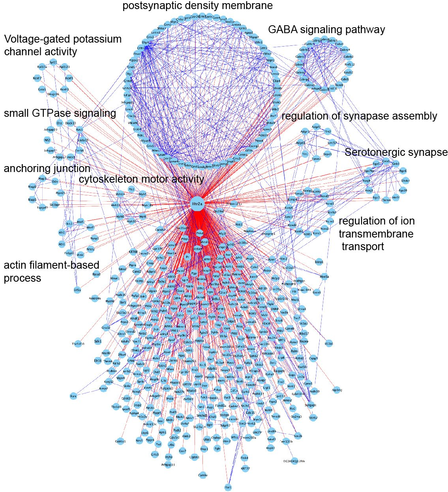

TurboID fused to the receptor biotinylates proteins within roughly 10 nm of it in the living brain. Streptavidin capture and mass spectrometry then read out that neighbourhood, giving the molecular environment of 5-HT2A as it actually sits in tissue.

Proximity protein network centred on Htr2a. Clusters correspond to postsynaptic
density membrane, GABA signalling, voltage-gated potassium channel activity, small GTPase
signalling, cytoskeleton and actin-filament processes, anchoring junctions, synapse assembly,
serotonergic synapse and ion transmembrane transport.
Core cluster
Proteins constitutively within labelling range of the receptor — its stable molecular neighbourhood.
Drug-regulated cluster
Proteins whose proximity to the receptor changes after psychedelic treatment.
Downloadable protein list
The full table with enrichment and significance values, plus a Cytoscape-ready edge list.